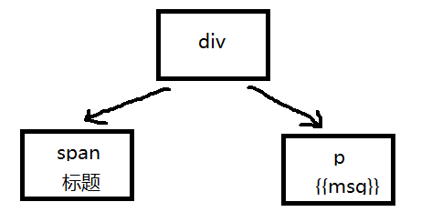
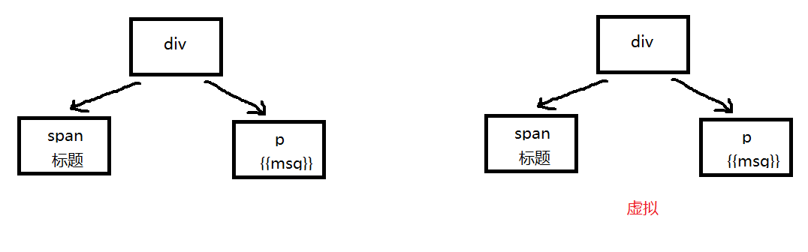
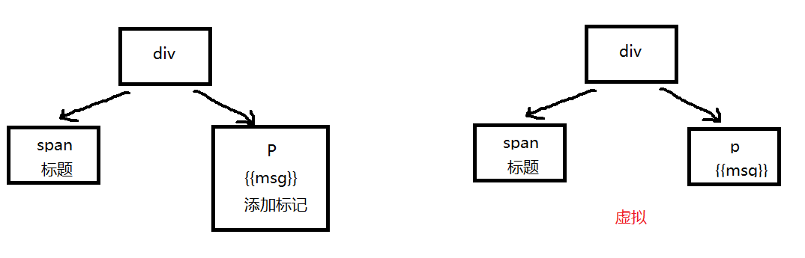
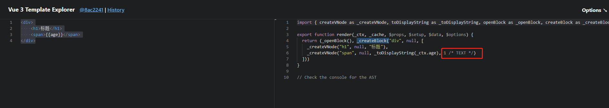
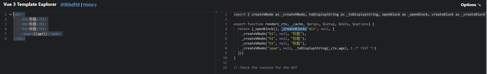
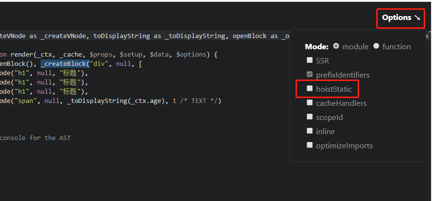
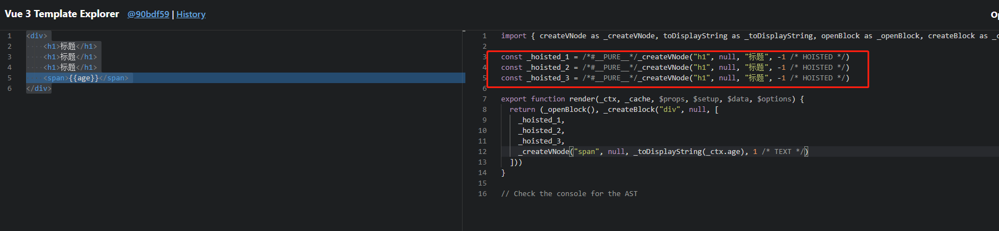
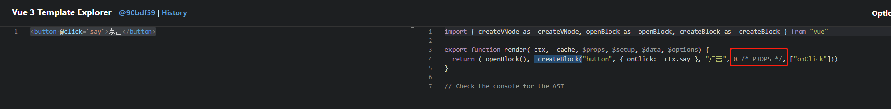
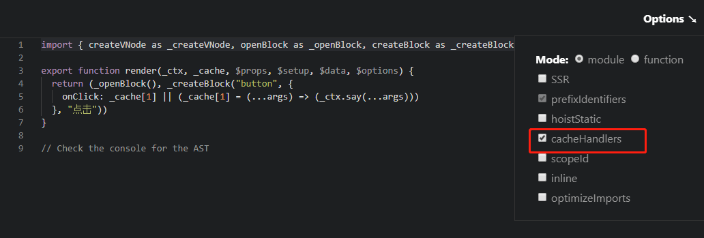
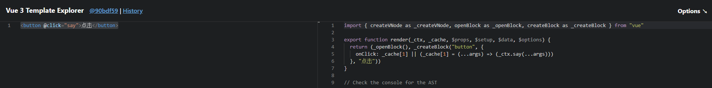

002-diff的升级
比如下面代码:
<div>
<span>标题</span>
<span>{{age}}</span>
</div>
在vue@2中，会根据上面的DOM生成一个DOM树，如下:

当数据发生改变，vue会生成一个新的虚拟DOM数，如下:

然后，从 div 开始一个个进行比较，最后发现是 span 改变了，那么就把span替换掉
这样其实有点问题，像 div/span 是写死的，无论数据怎么变， div/h1 都不会变，其实是没有必要进行对比的，这就是vue@3所解决的diff算法。
vue@3在创建DOM树的时候给DOM会发生变化的添加静态标识，当数据发生变化的时候，只对比有静态标识的DOM

验证上面的想法，在(官方在线编译vue代码)[https://vue-next-template-explorer.netlify.app/]上编辑我们的代码，得到下面结果：

从图中可以看出，有数据绑定的有 1 这个标识
在vue@3中，像 1 的这种标识还有如下：
- TEXT = 1, // --取值是1---表示具有动态textContent的元素
- CLASS = 1 << 1, // --取值是2---表示有动态Class的元素
- STYLE = 1 << 2, // --取值是4---表示动态样式（静态如style="color: pink"，也会提升至动态）
- PROPS = 1 << 3, // --取值是8--- 表示具有非类/样式动态道具的元素。
- FULL_PROPS = 1 << 4, // --取值是16---表示带有动态键的道具的元素，与上面三种相斥
- HYDRATE_EVENTS = 1 << 5, // --取值是32---表示带有事件监听器的元素
- STABLE_FRAGMENT = 1 << 6, // --取值是64---表示其子顺序不变，不会改变自顺序的片段。
- KEYED_FRAGMENT = 1 << 7, // --取值是128---表示带有键控或部分键控子元素的片段。
- UNKEYED_FRAGMENT = 1 << 8, // --取值是256---子节点无key绑定的片段（fragment）
- NEED_PATCH = 1 << 9, // --取值是512---表示只需要非属性补丁的元素，例如ref或hooks
- DYNAMIC_SLOTS = 1 << 10, // --取值是1024---表示具有动态插槽的元素
等等
这一部分定义在枚举里面
2、静态提升
在 vue@2 中，无论元素是否参与更新，都要被重新创建，然后再渲染
在 vue@3 中，对于不参与更新的元素，会做静态提升，只会被创建一次，在渲染的时候复用即可
验证，还是借助vue编译平台
有下面代码:
<div>
<h1>标题</h1>
<h1>标题</h1>
<h1>标题</h1>
<span>{{age}}</span>
</div>
如果没有静态提升，编译后是下面结果

可以看出，每次数据发生改变的时候，会调用render，而render每次都有调用 createNode 去渲染3个写死的 <h1>
我们点击 options - hoistatic 让其开启静态提升功能

相同的代码，得到下面的结果:

可以看到，没有数据绑定的3个 <h1> 被提取到了 render 外面，当数据发生改变调用render，render里面直接拿外面创建好的，而不会又再调用render去创建 <h1>
3、事件缓存
默认情况下，@click 会被视为动态绑定，所以每次都会去追踪它的变化。但是因为是同一个函数，其实没必要跟踪，直接缓存起来复用即可。
还是借助vue在线编译平台
比如下面代码:
<button @click="say">点击</button>
在开启事件缓存之前，编译结果如下:

可以开出，在开启事件缓存之前，编译后的代码有个静态标记 8。在前面diff算法中我们知道数字8表示属性绑定，每次数据发生改变，就会对比。
但是在事件中，我们绑定的是一个函数，其实是没有必要进行对比的。
开启事件缓存

开启事件缓存之后，相同代码编译结果

可以看出，现在已经没有静态标识了，当数据发生改变，也不会触发校验